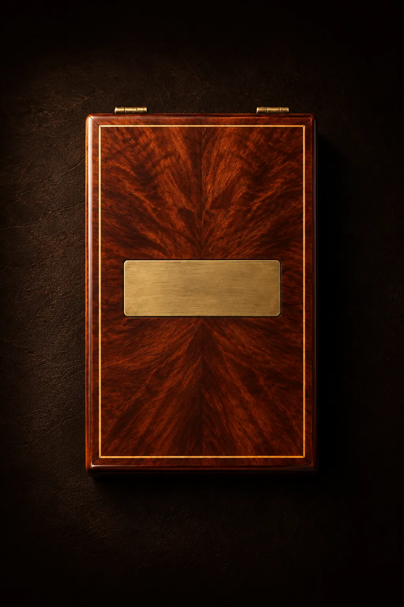
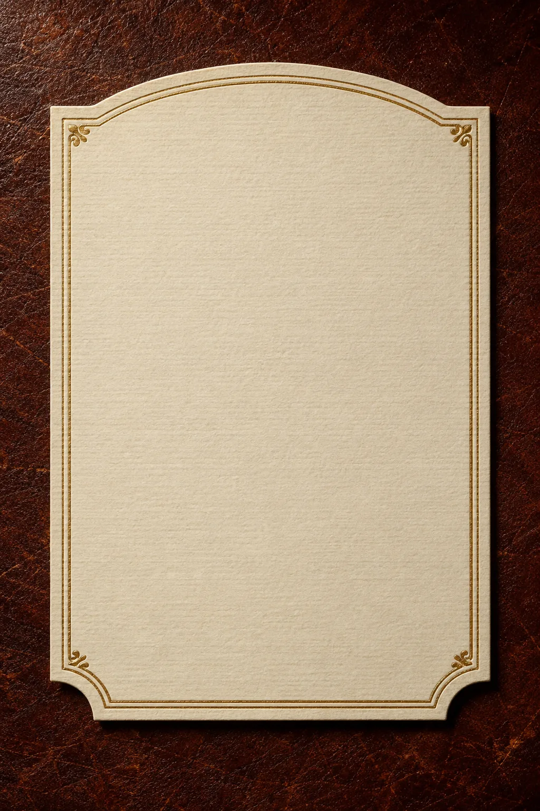
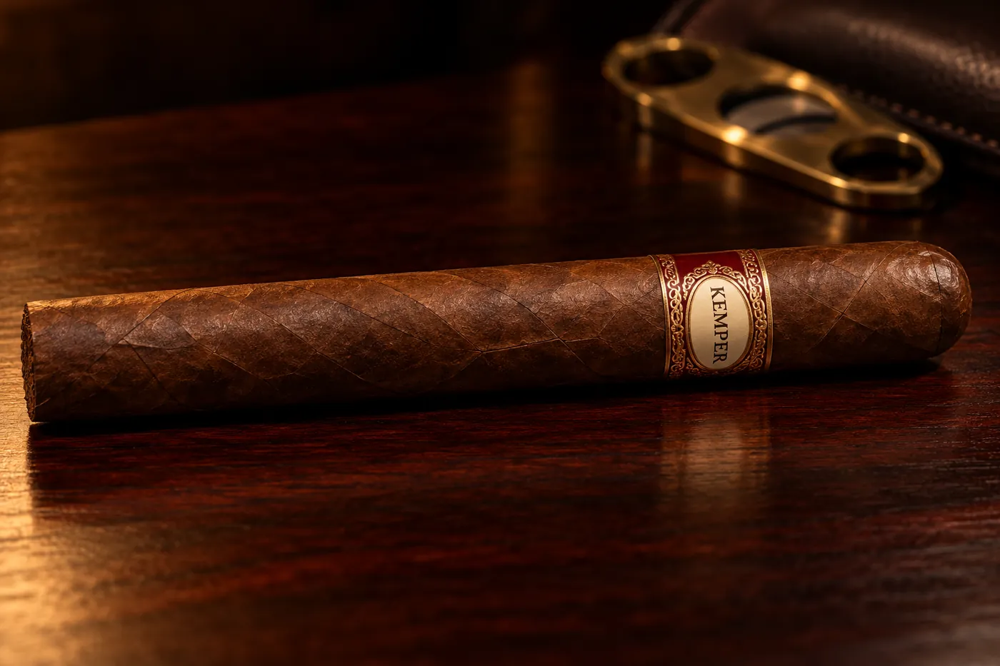

La previade Dani
Sábado 24 de octubre
desde las 15:00, en Casa Puente
Caballeros,
Antes de dar el sí quiero pasar las últimas horas de soltero con ustedes. Picamos unos bocaditos, brindamos con el whisky de LK, prendemos unos habanos y nos ponemos el traje juntos, hasta que arranque el civil.

Previa del novio
Reserva
KEMPER
Añejado33años
Destilado en Casa Puente,
Mariano Roque Alonso
Embotellado paralos caballeros
Notas de cata
Con el vaso en la mano
- Nariz
- Bocaditos, cuero, madera y un novio que se hace el tranquilo.
- Boca
- El whisky de LK. Habanos sin apuro y anécdotas de las buenas.
- Final
- Largo y elegante: el traje puesto, las fotos y el civil ahí mismo.

Sábado 24 de octubre
desde las 15:00
Casa Puente
Av. Paseo de Fátima 464,
Mariano Roque AlonsoEn el mismo lugar del casamiento.
Faltan
0días
00horas
00min
00seg
para abrir la barrica.
Los espero,
Dani